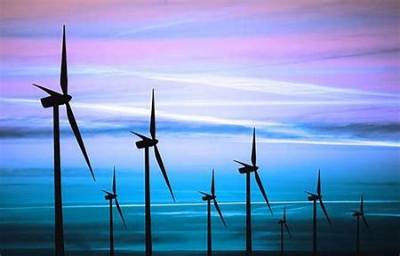

Wind Energy

As Myanmar has adapted many of the 21st century’s technological advancements, is it also likely to adapt to renewable energies at the same pace? DNV GL and other renewable candidates are attempting their best to sway investors and officials. Consultants from Norway, Germany, the British Embassy and national energy development committee members joined a seminar on 16 December to discuss the potential and challenges in wind energy for Myanmar. "A leapfrog opportunity for the country is underway," said David Fullbrook, an energy-renewable advisory member of DNV GL, who also concluded that changes at a systematic level are also required to match the evolution of resources. Anthony Preston, Head of Prosperity at the British Embassy in Myanmar, commented, “It has never been a better time for a country to develop renewable energy,” while also mentioning the UK government's dedication to the development of Myanmar’s renewable energy sector. The Urge People's access to power is a critical issue because three-quarters of the country have no access to electricity, while in developing Asia the average number is 18%, according to data from the Asia Development Bank. Hydropower is a major component of renewable energy and accounted for nearly 74% of the overall electricity generation of Myanmar in 2013, according to government data. Thus, energy supply fluctuates between rainy and dry seasons, calling for the supplement from other renewable energies like solar and wind power. Neighbouring countries still look to Myanmar in order to fulfill their needs, with China being one of the largest in the region constructing hydro-power plants that are mostly infamous for their social costs. China and India increased their domestic energy production on wind and other renewable resources withwind energy production increasing by nearly 20% in 2014 compared with the previous year, according to REN21 data. Recently Myanmar was ranked as the 2nd most affected country by climate change - from 1993-2012 - according to the Global Climate Risk Index 2015. Although Myanmar is a developing country, it did not contribute much to CO2 emissions. Yet, Myanmar has shifted its eyes to fossil fuels - particularly coal – and has strayed from other forms of renewable energies. In a number of plans the government has been working on, Myanmar aims to increase coal power to nearly a third and lower renewables to 9% for electrification in 2030. The main reason for raising coal power electrification is due to technical limitations and stability, according to a recent interview with the deputy minister of Ministry of Electric Power U Maw Thar Htwe. Research released at the seminar, however, revealed great potential in wind energy in Myanmar and expressed the need for stable and simple policies and regulations. “If all the costs are weighed solar and wind usually offer better value, more flexibility, and less risk than other resources like coal. It's also certainly possible to depend on solar and wind, as we see for example in Denmark and Uruguay, if the electricity system is reconfigured to match the resource. The technology and know-how are there, which maybe wasn't true ten years ago. Of course Rome wasn't built in a day. It takes time for knowledge, evidence and confidence for an energy leapfrog to spread.” David Fullbrook replied in an email on why the government is still looking to increase fossil consumption.